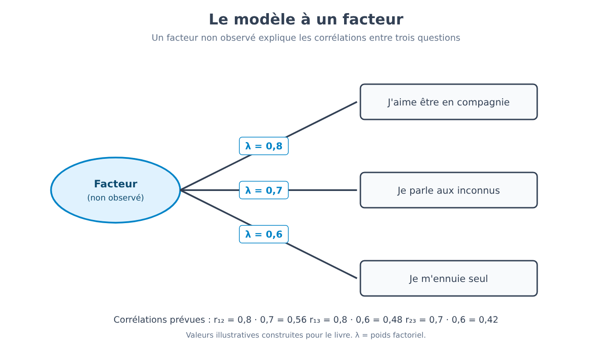
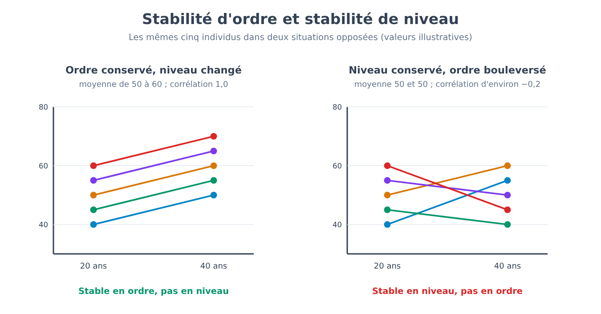
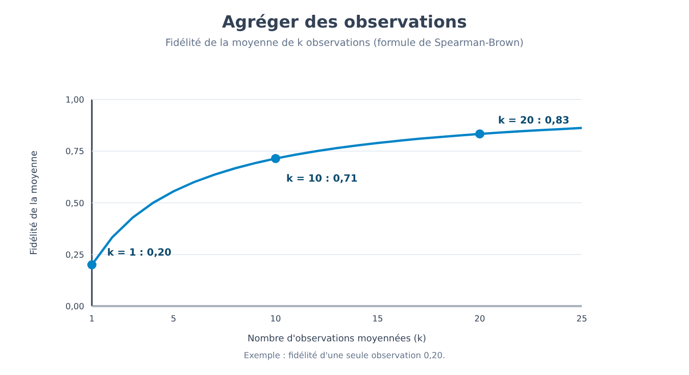
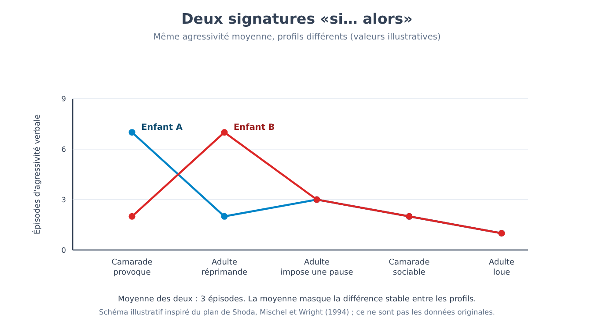
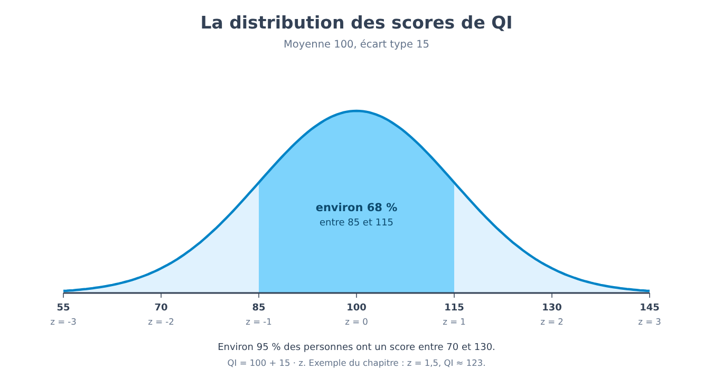
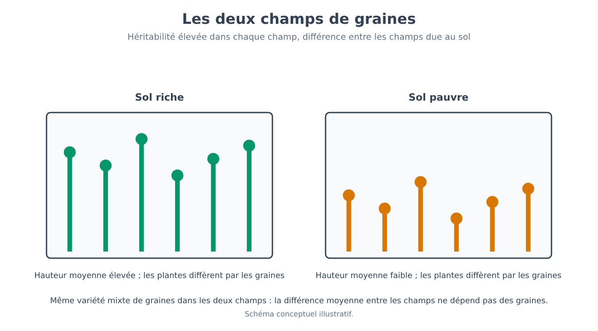
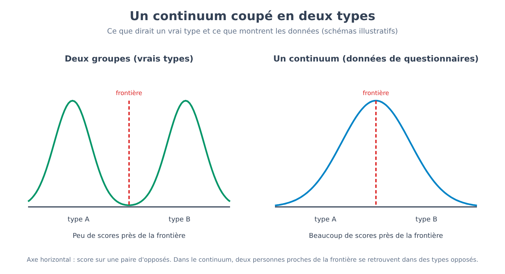

Partie X. Personnalité et différences individuelles
Chapitre 61 — Décrire les différences
[EN DEUX MOTS]
Pour étudier les différences de personnalité, il faut d'abord décider en combien de dimensions, et lesquelles, on les décrit. Ce chapitre expose l'idée que les langues ont déjà condensé ces dimensions dans les mots qui servent à décrire les personnes, la technique statistique (l'analyse factorielle) avec laquelle on cherche la structure derrière des milliers d'adjectifs, le modèle à cinq facteurs qui en est sorti, et les raisons pour lesquelles ce modèle est une description utile et non une découverte sur la façon dont l'esprit est fait.
La partie précédente s'est close sur une question : si les personnes changent au cours de leur vie, qu'est-ce qui reste stable dans les différences entre elles ? Pour y répondre, il faut d'abord disposer d'une manière de décrire ces différences, et c'est moins évident qu'il n'y paraît. Essaie de décrire un ami en n'utilisant pas plus de cinq mots. Tu choisiras probablement des adjectifs comme « ponctuel », « timide », « généreux », « anxieux ». Chacun de ces adjectifs saisit quelque chose que d'autres adjectifs ne saisissent qu'en partie : une personne ponctuelle est souvent aussi ordonnée, et une personne timide est rarement sociable. Si le français, comme toute autre langue, offre des milliers de mots de ce type, la question est de savoir si, derrière tous ces mots, il y a un petit nombre de dimensions, et combien.
L'hypothèse lexicale
L'hypothèse lexicale (lexical hypothesis) soutient que les différences individuelles les plus importantes pour la vie sociale se sont déposées dans le langage : si une différence entre personnes compte dans les rapports quotidiens, les gens auront ressenti le besoin d'un mot pour la désigner. Il en découle une méthode, qui consiste à partir du dictionnaire plutôt que de la théorie. C'est un choix de prudence : aucun chercheur n'a à décider à l'avance quels traits existent, et le vocabulaire d'une langue représente le travail de nombreuses générations d'observateurs.
[LE PLAN DE L'EXPÉRIENCE]
Le premier grand recensement fut celui de Gordon Allport et Henry Odbert (1936), qui partirent d'un dictionnaire anglais d'environ quatre cent mille mots et en extrayèrent 17 953 termes capables de décrire le comportement ou la personnalité d'une personne. Ils les divisèrent en catégories : dans celle des traits proprement dits, c'est-à-dire les mots qui désignent des manières stables de se comporter (« timide », « généreux »), il en resta 4 504. Le travail de réduction fut poursuivi dans les décennies suivantes. Warren Norman (1963, 1967) analysa les termes de cette liste, en ramena le nombre à 2 797 mots décrivant des traits, et trouva une structure à cinq facteurs. La méthode, dans ses grandes lignes, est la même dans toutes les études lexicales : un groupe de personnes s'évalue lui-même, ou évalue des personnes qu'il connaît, sur une longue liste d'adjectifs ; on calcule les corrélations entre adjectifs, deux à deux ; puis une analyse factorielle cherche les quelques ensembles d'adjectifs qui varient ensemble. La question à laquelle répond l'expérience n'est pas « comment l'esprit est-il fait », mais « en combien de dimensions statistiquement distinctes s'organisent les descriptions que les gens donnent d'eux-mêmes et des autres ».
Le nombre 17 953 contient tout ce que le dictionnaire a à dire sur la personnalité, y compris des états d'âme passagers (« furieux »), des jugements moraux (« méchant ») et des termes rares. Le passage à 4 504 puis à 2 797 montre que la première décision d'une recherche de ce type, celle des mots à inclure, est un choix et non une donnée. D'autres choix (inclure ou exclure les jugements de valeur, les termes sur le corps, les termes rares) ont conduit à des listes différentes, et une partie des différences entre les modèles dont il sera question plus loin vient de là.
L'analyse factorielle, expliquée à partir de zéro
Pour que quatre mille adjectifs ne deviennent pas quatre mille dimensions, il faut une technique statistique qui reconnaisse quels adjectifs vont ensemble. Le point de départ est le coefficient de corrélation, déjà défini au chapitre 4. Si je pose la même question à de nombreuses personnes (« aimes-tu être en compagnie ? », « parles-tu facilement avec des inconnus ? », « t'ennuies-tu quand tu es seul ? ») et que je calcule la corrélation entre les réponses, je trouve qu'elles sont toutes positives : qui répond oui à la première tend à répondre oui aussi aux autres. L'analyse factorielle part de l'hypothèse que cette tendance commune a une seule origine, une variable non observée directement, le facteur, qui influence les trois réponses. Le facteur ne se mesure pas : il se déduit du fait que les réponses varient ensemble.
[FORMULE]
Dans le modèle le plus simple, à un seul facteur, la corrélation entre deux questions i et j est le produit de leurs poids factoriels (factor loadings) :
r_ij = λ_i · λ_j
Où :
• r_ij est la corrélation observée entre la question i et la question j ;
• λ_i (lambda) est le poids factoriel de la question i : la corrélation entre la question i et le facteur non observé ;
• λ_j est le poids factoriel de la question j, défini de la même manière ;
• λ_i² est la part de variabilité de la question i que le facteur commun explique ; le reste est spécifique à cette question, ou relève de l'erreur de mesure.
Exemple de calcul. Suppose que les poids des trois questions de l'exemple ci-dessus soient λ₁ = 0,8, λ₂ = 0,7 et λ₃ = 0,6. Le modèle prédit les corrélations : r₁₂ = 0,8 · 0,7 = 0,56 ; r₁₃ = 0,8 · 0,6 = 0,48 ; r₂₃ = 0,7 · 0,6 = 0,42. La part de variabilité expliquée par le facteur est λ² = 0,64, 0,49 et 0,36 pour les trois questions. La démarche réelle va dans la direction opposée : on observe les trois corrélations et on en tire les poids. Avec trois questions, une seule étape suffit : λ₁² = (r₁₂ · r₁₃) / r₂₃ = (0,56 · 0,48) / 0,42 = 0,64, d'où λ₁ = 0,8. Avec des centaines d'adjectifs, le calcul est le même dans son esprit, mais il exige un ordinateur.
Avec plus d'une dimension, le modèle comporte plusieurs facteurs et chaque question a un poids sur chacun. Il reste trois décisions qui reviennent à celui qui analyse et que le calcul ne prend pas de lui-même. La première est le nombre de facteurs à retenir : il existe des critères (par exemple, ne retenir que les facteurs qui expliquent plus de variabilité que n'en explique une question isolée, ou s'arrêter là où la courbe de la variabilité expliquée cesse de descendre brusquement), mais des critères différents peuvent suggérer des nombres différents. La deuxième est la rotation : la solution mathématique n'est pas unique, et l'on choisit, parmi les solutions équivalentes quant à leur ajustement aux données, celle dans laquelle les facteurs sont les plus faciles à interpréter. La troisième est le nom à donner à chaque facteur, qui est un acte d'interprétation fondé sur les adjectifs qui pèsent le plus. Aucun de ces trois choix n'est arbitraire, mais aucun n'est dicté par les seules données.

Le modèle à cinq facteurs
Des études lexicales et de celles sur les questionnaires est ressorti, dans de nombreux échantillons de langue anglaise puis d'autres langues européennes, un ensemble de cinq dimensions, appelé modèle à cinq facteurs ou des « Big Five ». Les cinq dimensions, avec les abréviations utilisées dans la littérature, sont : l'extraversion (extraversion), qui concerne la sociabilité, l'énergie et la recherche de stimulations ; l'agréabilité (agreeableness), c'est-à-dire la coopération, la confiance et la compassion ; le caractère consciencieux (conscientiousness), qui concerne l'organisation, la fiabilité et l'autodiscipline ; le névrosisme (neuroticism), la tendance à éprouver des émotions négatives comme l'anxiété, la tristesse, l'irritation ; et l'ouverture à l'expérience (openness to experience), c'est-à-dire la curiosité, l'imagination et l'intérêt pour les idées nouvelles. Chacune est une dimension continue : chaque personne a une position sur chacune, et la grande majorité se situe au milieu, comme pour la taille.
[IDÉE REÇUE]
« Un test de personnalité t'assigne à un type. » Dans le modèle à cinq facteurs, les types n'existent pas : il existe cinq scores, chacun sur une échelle continue. Dire « tu es un extraverti » signifie que sur cette échelle la position se situe au-dessus du point médian, mais la différence avec quelqu'un qui se trouve juste en dessous est aussi petite que celle entre deux personnes de 175 et 176 centimètres. Pour que les types existent comme groupes distincts, les scores devraient se concentrer en groupes séparés, et les données ne montrent pas cette forme. Le chapitre 65 reprend le thème.
Le modèle est une description, et il faut le distinguer d'une explication. Dire qu'une personne a un score élevé de caractère consciencieux résume la façon dont elle se comporte (ordonnée, ponctuelle, fiable) sans dire pourquoi. Le facteur est une variable statistique qui résume des corrélations, et le passage de « ces comportements varient ensemble » à « il existe dans la personne une chose qui les cause » est un saut que l'analyse factorielle seule n'autorise pas. Les cinq dimensions sont un instrument de description très efficace ; savoir si elles correspondent à cinq composantes distinctes du cerveau est une question différente, à laquelle la méthode lexicale ne répond pas.
[CHIFFRES]
• 17 953 : termes repérés par Allport et Odbert (1936) dans le dictionnaire, pour décrire le comportement ou la personne.
• 4 504 : ceux classés comme termes de trait.
• 2 797 : les termes de trait restants après la réduction de Norman (1963, 1967).
• 5 : le nombre de facteurs que l'analyse de Norman a trouvé ; le même nombre est ressorti de nombreuses études ultérieures avec des échantillons occidentaux, alors que ce nombre dépend aussi des choix de l'analyste.
Quelle universalité, quelles alternatives
[QUESTION CONTROVERSÉE]
Si les cinq dimensions saisissaient un aspect fondamental de la nature humaine, on devrait les retrouver dans toute population. Dans de nombreux pays, en particulier les pays industrialisés et à forte scolarisation, la structure se retrouve assez bien. Une étude sur les Tsimané, un peuple d'horticulteurs et de cueilleurs de Bolivie (Gurven et collègues, 2013), a rapporté en revanche que le modèle à cinq facteurs n'émergeait pas clairement, et qu'à sa place la structure apparaissait plus simple, avec un nombre moindre de dimensions. Les explications possibles sont diverses et non exclusives : une structure réellement différente dans les cultures à faible scolarisation et à faible vie dans des sociétés de grande taille ; le fait que les questions, les échelles de réponse et la manière d'administrer le questionnaire soient construites pour des lecteurs habitués aux tests ; des difficultés de traduction des adjectifs. Le résultat a été discuté et l'on ne sait pas encore clairement quel poids revient à chaque explication. Le tableau prudent est que les cinq facteurs décrivent bien la structure des réponses aux questionnaires dans de nombreuses populations, et que « universel » est, pour l'instant, un mot trop fort.
Une alternative qui a eu du succès est le modèle HEXACO, présenté par Ashton et Lee (2004), qui conserve cinq dimensions (en appelant l'une d'elles « émotionnalité », avec un sens un peu différent du névrosisme) et en ajoute une sixième, l'honnêteté-humilité (honesty-humility) : sincérité, équité, absence de cupidité et de prétention. L'argument est qu'en étudiant les lexiques de plusieurs langues, et non seulement celui de l'anglais, cette dimension apparaît avec régularité et ne se réduit pas aux autres. Le choix entre cinq et six est aussi un exemple concret des trois décisions de l'analyse factorielle : il dépend des adjectifs que l'on inclut et du nombre de facteurs que l'on décide de retenir.
[TIENT-ON ENCORE ?]
Le modèle à cinq facteurs tient comme description : les dimensions se retrouvent dans de nombreux échantillons, elles sont mesurées avec des questionnaires fiables et prédisent, de façon modérée, des résultats comme la réussite scolaire ou la santé. Comme théorie des causes de la personnalité, il ne tient pas, parce qu'il n'est pas né pour expliquer. Comme structure universelle et définitive, il ne tient qu'en partie : il dépend de l'échantillon, de la méthode et de la langue, et les alternatives à six dimensions ou à un nombre différent ont leurs propres arguments.
[MINI-CHRONOLOGIE]
• 1936 : Allport et Odbert recensent 17 953 termes dans le dictionnaire.
• 1963-1967 : Norman réduit la liste et trouve cinq facteurs.
• Les années 1980 et 1990 : les cinq facteurs sont adoptés comme standard descriptif et mesurés par des questionnaires.
• 2004 : Ashton et Lee proposent le modèle à six dimensions HEXACO.
• 2013 : l'étude sur les Tsimané remet en question l'universalité de la structure.
Il reste à voir dans quelle mesure ces dimensions sont stables dans le temps, dans quelle mesure elles dépendent du moment et de la situation dans lesquels on observe la personne, et dans quelle mesure la façon dont nous les mesurons est bonne. Ce sont les trois questions des chapitres 62, 63 et 65.
[L'ESSENTIEL DU CHAPITRE]
• L'hypothèse lexicale tire les dimensions de la personnalité du vocabulaire : Allport et Odbert (1936) trouvèrent 17 953 termes descriptifs, dont 4 504 de trait.
• L'analyse factorielle cherche la variable non observée qui explique les corrélations entre de nombreux éléments : dans le modèle à un facteur, la corrélation entre deux éléments est le produit de leurs poids (r_ij = λ_i · λ_j).
• Le nombre de facteurs, la rotation et les noms des facteurs sont des décisions de l'analyste, non des résultats du calcul.
• Le modèle à cinq facteurs (extraversion, agréabilité, caractère consciencieux, névrosisme, ouverture) décrit les différences avec cinq dimensions continues, non avec des types.
• C'est une description et non une explication : du fait que les comportements varient ensemble, il ne s'ensuit pas qu'il existe une cause unique dans la personne.
• L'universalité de la structure est discutée (étude sur les Tsimané) ; le modèle HEXACO ajoute l'honnêteté-humilité.
Chapitre 62 — Stabilité et changement
[EN DEUX MOTS]
« Stable » peut vouloir dire deux choses différentes : que les personnes conservent leur place dans l'ordre par rapport aux autres, ou que leur niveau moyen ne change pas. Ce chapitre sépare les deux sens, montre pourquoi un coefficient de stabilité doit être corrigé de l'erreur de mesure, expose ce que montrent les données longitudinales sur la maturation et sur les événements de vie, et explique pourquoi la tendance moyenne ne permet pas de déduire ce qui arrivera à une personne.
Demande à quelqu'un si la personnalité change avec les années et tu recevras deux réponses opposées, souvent de la même personne le même jour : « mon frère a toujours été comme ça » et « depuis qu'il a des enfants, je ne le reconnais plus ». Les deux phrases ne se contredisent pas, parce qu'elles parlent de choses différentes. Pour comprendre quelles données soutiennent chacune, il faut distinguer deux manières d'être stable.
Stabilité d'ordre et stabilité de niveau
La stabilité d'ordre (rank-order stability) concerne la position relative : celui qui était plus extraverti que les autres à vingt ans l'est-il encore à quarante ? On la mesure par la corrélation entre les scores de la même mesure à deux moments. La stabilité de niveau, ou changement du niveau moyen (mean-level change), concerne en revanche le score moyen du groupe : à quarante ans, les personnes sont-elles en moyenne plus ou moins extraverties qu'à vingt ? Les deux choses sont indépendantes. Un exemple avec des nombres construits : cinq personnes ont à vingt ans des scores de 40, 45, 50, 55 et 60 ; à quarante ans, chacune a gagné exactement dix points (50, 55, 60, 65, 70). Le niveau moyen est passé de 50 à 60, tandis que l'ordre est identique et que la corrélation entre les deux mesures est de 1,0. Dans le cas opposé, le groupe pourrait avoir la même moyenne à vingt ans et à quarante ans, et les personnes s'être en grande partie redistribuées : corrélation proche de zéro et niveau inchangé.

[IDÉE REÇUE]
« À trente ans, la personnalité est faite et ne change plus. » Les deux moitiés de cette phrase se confrontent à des données différentes. La stabilité d'ordre, en effet, croît de l'enfance à la jeunesse puis se stabilise sur des valeurs élevées : les méta-analyses longitudinales récentes indiquent un plafonnement autour de vingt-cinq ans, sans évidence d'augmentations ultérieures après cet âge. Mais une valeur élevée n'est pas un : l'ordre se conserve en bonne partie, non totalement. Et le niveau moyen continue de bouger même après trente ans, comme on le voit ci-dessous. Le tableau correct est « relativement stable et jamais clos ».
Mesurer la stabilité : l'erreur de mesure
Le coefficient de stabilité d'ordre a une limite que le chapitre 3 avait déjà introduite à propos de la fiabilité : aucune mesure n'est parfaite. Si un questionnaire d'extraversion, même administré deux fois le même jour, donne une corrélation de 0,80 avec lui-même, la corrélation entre deux mesures espacées de dix ans ne peut pas dépasser cette valeur, même si la personne n'avait pas du tout changé. Une partie de la différence entre les deux mesures est de l'erreur, non du changement.
[FORMULE]
La correction pour atténuation (correction for attenuation) estime la corrélation que l'on observerait entre les deux scores s'ils étaient dépourvus d'erreur de mesure :
r_vraie = r_observée / √(r_xx · r_yy)
Où :
• r_observée est la corrélation effectivement mesurée entre la première et la seconde mesure ;
• r_xx est la fiabilité de la première mesure (par exemple son test-retest à court intervalle) ;
• r_yy est la fiabilité de la seconde mesure ;
• √ indique la racine carrée du produit des deux fiabilités.
Exemple de calcul. Une échelle de caractère consciencieux est administrée à vingt ans puis de nouveau à trente ans, et la corrélation est de 0,60. La fiabilité de l'échelle, mesurée à court intervalle, est de 0,80 dans les deux occasions. Alors : r_vraie = 0,60 / √(0,80 · 0,80) = 0,60 / 0,80 = 0,75. Une partie de l'« instabilité » observée (de 1,0 à 0,60) est donc de l'erreur de mesure ; le reste, de 1,0 à 0,75, est un changement effectif, ou l'effet d'autres sources de différence entre les deux occasions.
La correction doit être utilisée avec prudence. Elle suppose que la fiabilité ait été bien estimée, et si l'on sous-estime la fiabilité, on surestime la stabilité réelle. De plus, la fiabilité à court intervalle inclut aussi la part de variation qui dépend du moment (l'humeur de ce jour-là), laquelle fait partie de la personne mais n'est pas un trait stable. Le nombre corrigé est une indication, non une vérité.
Le changement de niveau : le principe de maturation
[LE PLAN DE L'EXPÉRIENCE]
Les méta-analyses sur le changement de la personnalité rassemblent des études longitudinales : les mêmes personnes sont mesurées plusieurs fois avec les mêmes instruments, dans certains cas pendant des décennies. Pour chaque intervalle d'âge, le changement moyen de chaque trait est exprimé en unités d'écart type, de sorte que l'on puisse comparer des traits et des études différents. La méta-analyse de Brent Roberts, Kate Walton et Wolfgang Viechtbauer (2006) a combiné les résultats de dizaines d'études longitudinales ayant ce plan. L'avantage par rapport à la comparaison transversale (déjà discutée au chapitre 60) est que la même personne est comparée à elle-même : la différence ne dépend pas de l'appartenance à une cohorte différente. La limite est que même un échantillon longitudinal perd des participants au fil du temps, et que ceux qui abandonnent ne le font pas au hasard.
Le résultat, en synthèse, est que de l'adolescence à l'âge mûr, et surtout entre 20 et 40 ans, le caractère consciencieux et la stabilité émotionnelle (le pôle opposé du névrosisme) tendent à augmenter en moyenne ; l'agréabilité, dans cette méta-analyse, changeait surtout à un âge avancé, tandis que pour l'extraversion et l'ouverture le tableau dépend de la facette considérée, certaines montant et d'autres descendant. Le changement se concentre dans la jeunesse et au début de l'âge adulte et se poursuit sous une forme plus légère ensuite. L'ensemble a été appelé principe de maturation (maturity principle), parce que les changements vont dans la direction de ce que l'on considère comme la maturité : plus de maîtrise de soi, plus de fiabilité, moins de réactivité émotionnelle. Les méta-analyses plus récentes confirment que les changements moyens vont vers une plus grande maturité, avec une ampleur variable d'un trait à l'autre.
[QUESTION CONTROVERSÉE]
Pourquoi cela arrive-t-il ? Une explication est biologique : la maturation cérébrale se poursuit au-delà de l'adolescence (chapitre 60), et un processus biologique de ce type est plausible. Une autre est sociale : le principe d'investissement social (social investment principle) soutient que l'entrée dans des rôles adultes comme le travail, le couple et la parentalité exige et récompense des comportements fiables et responsables, et que ces comportements, répétés, modifient les traits. Les deux hypothèses ne s'excluent pas, et les données disponibles sont en grande partie observationnelles, donc ne permettent pas de les séparer. Nous savons qu'en moyenne un changement se produit vers la maturité ; que la cause en soit la biologie, les rôles sociaux ou leur interaction, c'est une question ouverte.
Les événements de vie
[LE PLAN DE L'EXPÉRIENCE]
Pour voir si un événement change la personnalité, la comparaison naturelle est celle de la même personne avant et après l'événement. L'étude de Jule Specht, Boris Egloff et Stefan Schmukle (2011) a utilisé les données d'un grand panel allemand représentatif de la population (le panel socio-économique allemand, SOEP), dans lequel plus de 14 000 personnes répondaient chaque année, avec les traits mesurés à deux occasions, en 2005 et en 2009, et les événements de vie enregistrés pendant les quatre années intermédiaires. Ceux qui avaient vécu un événement (un mariage, un divorce, la naissance d'un enfant, la perte d'un emploi) étaient comparés, en termes de changement des traits, à ceux qui ne l'avaient pas vécu. La question portait non seulement sur l'existence d'une différence, mais sur son ampleur et sa durée.
Les résultats des travaux de ce type ont une forme constante. Les effets des événements pris isolément sur les traits sont en général petits, en moyenne plus petits que ce à quoi le récit commun s'attendrait, et ils varient d'une personne à l'autre, parfois dans des directions opposées ; certains sont transitoires, et le trait revient vers le niveau précédent après quelques années. Il y a pourtant une limite d'interprétation importante : ce n'est pas une expérience, et celui qui vit un certain événement n'est pas choisi au hasard. Ceux qui se marient, ceux qui changent de travail, ceux qui ont des enfants diffèrent déjà avant l'événement de ceux qui ne le font pas, et c'est aussi pour cela que la comparaison avant/après n'est pas une comparaison causale pure. Reste la donnée descriptive utile : les grands événements déplacent la personnalité moins qu'on ne le croit.
Peut-on changer délibérément ?
Une question pratique est de savoir si des interventions ciblées, par exemple une psychothérapie, peuvent modifier les traits. Une méta-analyse d'interventions, de Roberts et collègues (2017), a rapporté que les traits changent de façon mesurable pendant ou après les interventions, surtout pour la stabilité émotionnelle et surtout dans des contextes cliniques. Dans quelle mesure le changement dure, dans quelle mesure il est spécifique à certaines interventions, et dans quelle mesure il est influencé par la sélection des études publiées, ce sont des questions sur lesquelles la recherche est encore en cours. Pour l'instant, on peut affirmer que la personnalité n'est pas immuable et qu'un changement délibéré est possible ; les ampleurs typiques et leur durée sont moins connues.
Stable ne signifie pas génétique
Une dernière distinction. Le fait qu'un trait soit stable, et qu'une grande part de sa variabilité soit associée à des différences génétiques (les estimations d'héritabilité des Big Five issues d'études sur des jumeaux, avec les mises en garde du chapitre 27, se situent entre 40 % et 60 % environ : ouverture 57 %, extraversion 54 %, caractère consciencieux 49 %, névrosisme 48 %, agréabilité 42 %) n'implique pas que le trait soit immodifiable. L'héritabilité décrit d'où vient la différence entre les personnes dans une population ; la stabilité décrit dans quelle mesure l'ordre se conserve dans le temps. Ce sont deux questions différentes, et la première ne répond pas à la seconde. Même l'attachement, dont le chapitre 57 a montré la continuité seulement modérée, ne passe pas de l'enfance à l'âge adulte comme une trace fixe.
[ATTENTION AU SAUT LOGIQUE]
« En moyenne, le caractère consciencieux augmente entre vingt et trente ans » est un énoncé sur le groupe. Il ne dit pas que la même chose arrive à chacun : dans un groupe où la moyenne monte un peu, il y a des personnes qui montent beaucoup, des personnes inchangées et des personnes qui descendent. Le passage de « le groupe change ainsi » à « tu changeras ainsi » est un saut, que la valeur même de la stabilité d'ordre dément : une corrélation de 0,75 laisse beaucoup de place à des positions qui se déplacent.
[CHIFFRES]
• 25 ans environ : âge après lequel, dans les méta-analyses longitudinales récentes, on n'observe plus d'augmentations de la stabilité d'ordre.
• 0,60 → 0,75 : l'exemple du chapitre, où la correction pour l'erreur de mesure (fiabilité 0,80) déplace la stabilité estimée.
• 42 %–57 % : estimations d'héritabilité des cinq traits dans une revue d'études sur des jumeaux (auto-évaluations), non une mesure de la fixité du trait.
[TIENT-ON ENCORE ?]
La stabilité d'ordre élevée à l'âge adulte tient dans de nombreux échantillons. L'idée qu'elle continue de croître jusqu'à l'âge mûr a été remplacée, dans les analyses les plus récentes, par celle d'un plafonnement autour de vingt-cinq ans. Le principe de maturation tient comme tendance moyenne, avec de grandes différences individuelles. Les explications causales (biologie, investissement social) restent des hypothèses non départagées.
[L'ESSENTIEL DU CHAPITRE]
• La stabilité d'ordre (la position relative) et la stabilité de niveau (le score moyen) sont indépendantes : on peut avoir l'une sans l'autre.
• La stabilité d'ordre croît de l'enfance à la jeunesse puis se plafonne autour de vingt-cinq ans ; elle n'est cependant jamais égale à un.
• Une partie de l'instabilité observée est de l'erreur de mesure : r_vraie = r_observée / √(r_xx · r_yy), à condition que la fiabilité soit bien estimée.
• En moyenne, de l'adolescence à l'âge mûr, le caractère consciencieux, l'agréabilité et la stabilité émotionnelle croissent (principe de maturation) ; les causes, biologiques ou sociales, ne sont pas départagées.
• Les événements de vie déplacent les traits moins qu'on ne le croit, avec des effets petits, variables, souvent transitoires, et dans des études non expérimentales.
• De la tendance moyenne, il ne s'ensuit pas ce qui arrivera à une personne ; l'héritabilité ne mesure pas la fixité d'un trait.
Chapitre 63 — Le débat personne-situation
[EN DEUX MOTS]
Si la personnalité est stable, le comportement d'une personne devrait être prévisible à partir d'un trait. Pourtant, les corrélations entre un trait et un comportement isolé sont modestes. Ce chapitre expose la critique qui en a découlé, les quatre réponses qui lui ont été données (agréger, comparer avec les effets des situations, mesurer la variabilité interne à la personne, chercher des cohérences de type « si… alors ») et la position intermédiaire à laquelle le débat est parvenu.
Imagine que tu saches qu'un de tes collègues obtient un score élevé d'agréabilité. Prévois-tu qu'il aidera aujourd'hui un autre collègue en difficulté ? La réponse intuitive est oui, et cette intuition est à la base de tout usage de la personnalité : utiliser un trait pour anticiper ce qu'une personne fera. Le problème est que, lorsqu'on a mis cette intuition à l'épreuve avec des données, le lien s'est révélé beaucoup plus faible que ne le laisse croire le sens commun.
La critique
En 1968, Walter Mischel publia une revue des données dans laquelle il observait que les corrélations entre une mesure de trait et un comportement concret dans une situation spécifique dépassaient rarement 0,30, une valeur qui fut appelée le « coefficient de personnalité ». Derrière cette critique, il y avait des études plus anciennes. La plus connue est celle de Hugh Hartshorne et Mark May (1928), qui observèrent des milliers d'enfants dans des épreuves d'honnêteté dans des situations différentes (copier lors d'un devoir, voler de l'argent, tricher dans un jeu). Le résultat était que la corrélation entre les épreuves était faible : un enfant qui trichait dans une situation ne trichait pas pour autant dans les autres. Si l'honnêteté avait été un trait qui se manifeste partout, les épreuves auraient dû beaucoup corréler.
[IDÉE REÇUE]
« Une personne honnête l'est toujours, et une personne malhonnête l'est toujours. » Les données de Hartshorne et May indiquent un tableau différent : la même personne, dans des situations différentes, se comporte de manière différente, et le comportement dans une situation prédit peu celui dans une autre. Cela ne veut pas dire que les gens sont tous pareils ou que l'honnêteté n'existe pas ; cela veut dire que l'idée d'un trait qui s'exprime de façon uniforme en toute circonstance est, comme description du comportement isolé, fausse.
La critique de Mischel remettait en question le projet même de décrire les personnes par des traits stables : si les traits prédisent si peu, peut-être la stabilité que nous attribuons aux personnes est-elle en partie une impression des observateurs, et le comportement dépend-il surtout de la situation. Entre les années 1970 et 1990, les partisans des traits et les critiques échangèrent des réponses, que l'on peut ranger en quatre.
Première réponse : agréger
Le comportement d'une personne à une occasion isolée est conditionné par de nombreuses choses : l'humeur du moment, qui est présent, ce qui vient de se passer. Une observation isolée est donc une mesure peu fiable du trait, exactement comme une seule question d'un questionnaire est une mesure peu fiable de l'échelle. Si l'on fait la moyenne de nombreuses occasions, les fluctuations aléatoires se compensent et la partie stable émerge. Seymour Epstein (1979) montra que lorsque le comportement est moyenné sur de nombreux jours, la corrélation avec d'autres mesures augmente de façon marquée.
[FORMULE]
La formule de Spearman-Brown estime la fiabilité d'une mesure obtenue comme moyenne de k observations, à partir de la fiabilité d'une observation isolée :
ρ_k = k · ρ / (1 + (k − 1) · ρ)
Où :
• ρ_k (rhô) est la fiabilité de la moyenne de k observations ;
• ρ est la fiabilité d'une observation isolée, c'est-à-dire la corrélation attendue entre deux observations du même type ;
• k est le nombre d'observations moyennées (jours, situations ou questions).
Exemple de calcul. Suppose que la corrélation entre le comportement un jour et celui un autre jour soit de 0,20, valeur plausible pour un comportement isolé. Avec k = 10 jours : ρ₁₀ = 10 · 0,20 / (1 + 9 · 0,20) = 2,0 / 2,8 ≈ 0,71. Avec k = 20 jours : ρ₂₀ = 20 · 0,20 / (1 + 19 · 0,20) = 4,0 / 4,8 ≈ 0,83. Le même trait, qui à un jour prédit peu, est mesuré de façon beaucoup plus fiable sur une moyenne de vingt jours. Le gain s'atténue à mesure que k croît.

L'agrégation résout une partie du problème, mais pas tout, et il faut dire clairement ce qu'elle résout. Elle démontre que les traits prédisent bien le comportement moyen sur de nombreuses occasions. Elle ne rend pas prévisible ce qu'une personne fera à une occasion isolée, et c'est précisément ce que l'intuition quotidienne cherche à anticiper.
Deuxième réponse : comparer avec la situation
David Funder et Daniel Ozer (1983) traduisirent en corrélations les résultats de quelques expériences classiques de psychologie sociale, celles qui montrent l'effet fort de la situation, et observèrent que les ampleurs étaient du même ordre que celles des traits, autour de 0,30-0,40. Une méta-analyse très vaste sur la psychologie sociale (Richard et collègues, 2003) a trouvé que l'effet moyen des facteurs situationnels dans tous les domaines étudiés est de l'ordre de 0,20 en termes de corrélation. La comparaison change la lecture du « coefficient de personnalité » : 0,30 n'est pas faible par rapport à ce que la psychologie parvient à expliquer avec tout autre type de facteur. La même prudence que celle du chapitre 5 vaut cependant ici aussi : les ampleurs citées proviennent en grande partie d'études originales, et les réplications tendent à trouver des effets plus petits.
Il faut garder à l'esprit un fait arithmétique : une corrélation de 0,30 signifie que le trait partage avec le comportement environ 9 % de la variabilité (0,30² = 0,09). Ces 9 % sont à la fois « peu », parce qu'ils laissent 91 % à autre chose, et, dans un contexte où presque rien ne se prédit mieux, un résultat qui en soi ne permet pas de dire que le trait est inutile.
Troisième réponse : la variabilité à l'intérieur de la personne
Une autre objection concerne l'idée même qu'un trait soit un niveau fixe. William Fleeson (2001) fit remplir à des groupes de personnes, pendant de nombreux jours de suite et plusieurs fois par jour, de brefs comptes rendus de leur comportement récent (dans quelle mesure elles s'étaient comportées de façon extravertie, par exemple). Le résultat est que la même personne varie beaucoup d'un moment à l'autre : la variation à l'intérieur de la personne est ample, du même ordre de grandeur que celle entre personnes différentes. En même temps, la moyenne que chacun présente dans le temps est stable et différencie les personnes. Le trait est alors repensé comme une distribution d'états : chacun se comporte de façon extravertie parfois et réservée d'autres fois, mais avec une fréquence et une gamme propres. L'image est plus fidèle aux données que celle du niveau fixe.
Quatrième réponse : la cohérence cachée, les signatures « si… alors »
La réponse la plus originale a renversé la question. Walter Mischel et Yuichi Shoda soutinrent que la cohérence de l'individu ne doit pas être cherchée dans le fait qu'il se comporte de la même façon dans toute situation, mais dans le fait qu'il ait un profil stable de la manière dont son comportement change avec la situation : une « signature » de type si… alors.
[LE PLAN DE L'EXPÉRIENCE]
Dans l'étude de Yuichi Shoda, Walter Mischel et Jack Wright (1994), des enfants âgés de sept à treize ans passaient six semaines dans un camp résidentiel d'été, où ils étaient observés de façon non intrusive pendant la vie quotidienne, pour une moyenne d'environ 167 heures d'observation chacun. Les observateurs codaient le comportement de l'enfant dans cinq types de situation interpersonnelle : trois négatives (un camarade qui se moque de lui, le provoque ou le menace ; un adulte qui le réprimande ; un adulte qui lui impose une pause) et deux positives (un camarade qui prend une initiative sociale positive ; un adulte qui le loue). Pour chaque combinaison, on enregistrait la fréquence de comportements comme l'agressivité verbale, la conformité, la plainte et la parole prosociale. Pour chaque enfant, on construisait ainsi un profil : quelle agressivité verbale il manifestait dans chacune des cinq situations. La question était de savoir si le profil se répétait dans le temps, en le comparant entre différentes parties de l'été.
Les profils étaient stables. La stabilité moyenne des profils, c'est-à-dire la ressemblance entre le profil d'un enfant dans une partie de l'été et le sien dans une autre partie, était d'environ 0,47 pour l'agressivité verbale, 0,41 pour la conformité, 0,28 pour la plainte et 0,19 pour la parole prosociale. Deux enfants pouvaient avoir la même quantité moyenne d'agressivité verbale et se comporter de façon très différente : l'un devenait agressif surtout lorsque c'était un camarade qui le provoquait, l'autre lorsque c'était un adulte qui le réprimandait. Si l'on ne regardait que la moyenne, les deux apparaissaient identiques, et les différences entre eux, qui étaient stables, disparaissaient. C'est pourquoi, selon les auteurs, le comportement n'apparaît pas incohérent : il est cohérent à un niveau que l'analyse par traits ne voit pas.

Les nombres doivent être lus avec attention : la stabilité des profils est modérée, et pour certains comportements faible. Le résultat ne démontre pas que les signatures soient la forme fondamentale de la personnalité ; il montre que, outre le niveau moyen, il existe une partie stable du comportement qui dépend de la situation et qui porte une empreinte individuelle. Il s'agit d'un seul terrain, d'enfants d'un camp, et les réplications dans d'autres contextes sont moins nombreuses que celles sur les traits.
Où le débat est parvenu
[QUESTION CONTROVERSÉE]
La discussion ne s'est pas close avec un vainqueur mais avec une position intermédiaire, l'interactionnisme : le comportement dépend de la personne, de la situation et de leur interaction, c'est-à-dire du fait que des personnes différentes réagissent de façon différente à la même situation. Reste ouverte la question de ce qu'est un trait. Pour une position, les traits sont des dispositions réelles qui causent le comportement. Pour une autre, ce sont des résumés statistiques des régularités observées, utiles pour décrire et prédire mais dépourvus d'une réalité causale propre. Les données considérées dans ce chapitre sont compatibles avec les deux lectures, et c'est pourquoi la discussion ne se tranche pas avec d'autres données du même type.
La conclusion pratique est double. Quand on veut savoir comment sera une personne en moyenne, en de nombreuses occasions, les traits fonctionnent bien. Quand on veut savoir ce qu'elle fera dans une situation spécifique, le trait seul est peu, et il importe de savoir aussi de quelle situation il s'agit et comment cette personne tend à réagir à ce type de situation. Les grandes démonstrations expérimentales du poids de la situation, auxquelles la Partie XI consacre le chapitre 66, doivent être lues à la lumière de cet équilibre : elles montrent combien la situation compte, non que la personne ne compte pas.
[ATTENTION AU SAUT LOGIQUE]
Du fait que la corrélation entre un trait et un comportement isolé soit de 0,30, il ne s'ensuit pas que le trait n'existe pas, ni que les personnes sont interchangeables. Du fait, opposé, que la moyenne sur vingt jours soit bien prévisible à partir du trait (0,83 dans l'exemple), il ne s'ensuit pas que l'on puisse prévoir ce qu'une personne fera demain. Ce sont deux niveaux d'analyse, et la question à laquelle on répond change à chaque niveau.
[CHIFFRES]
• 0,30 : le « coefficient de personnalité » cité par Mischel (1968) comme plafond de la corrélation entre trait et comportement spécifique.
• 9 % : la part de variabilité partagée par une corrélation de 0,30 (0,30² = 0,09).
• 0,20 → 0,71 → 0,83 : fiabilité d'une observation isolée, de la moyenne sur 10 et de la moyenne sur 20 (formule de Spearman-Brown, valeurs d'exemple).
• 167 heures : observation moyenne par enfant dans l'étude du camp (Shoda, Mischel et Wright, 1994) ; stabilité des profils de 0,19 à 0,47 selon le comportement.
[TIENT-ON ENCORE ?]
Le principe de l'agrégation tient, parce qu'il est une conséquence mathématique de l'erreur de mesure. La comparaison avec les effets de la situation tient pour l'essentiel, avec la réserve que les deux grandeurs proviennent d'études originales. La conception du trait comme distribution d'états a trouvé des confirmations dans des études avec échantillonnage répété au cours de la journée. Le cas des signatures « si… alors » est soutenu par peu d'études de grande qualité et moins répliqué ; son résultat de fond (une partie du comportement cohérent est liée à la situation) est moins contesté que sa généralité.
[MINI-CHRONOLOGIE]
• 1928 : Hartshorne et May montrent la faible corrélation entre des épreuves d'honnêteté dans des situations différentes.
• 1968 : Mischel résume la critique, avec la limite d'environ 0,30.
• 1979 : Epstein montre le rôle de l'agrégation.
• 1983 : Funder et Ozer comparent les ampleurs des effets de la personne et de la situation.
• 1994 : Shoda, Mischel et Wright étudient les signatures « si… alors » au camp.
• 2001 : Fleeson décrit la variabilité à l'intérieur de la personne.
[L'ESSENTIEL DU CHAPITRE]
• Les corrélations entre un trait et un comportement spécifique ne dépassent généralement pas 0,30 (Mischel, 1968 ; Hartshorne et May, 1928) : un trait prédit peu ce que l'on fait à une occasion isolée.
• L'agrégation sur de nombreuses occasions augmente la fiabilité (ρ_k = kρ / (1 + (k − 1)ρ)) : de 0,20 pour une observation isolée à environ 0,83 pour la moyenne sur vingt, mais elle reste valable pour le comportement moyen, non pour l'acte isolé.
• 0,30 est comparable aux ampleurs des effets situationnels cités, avec la réserve que les deux grandeurs proviennent d'études originales.
• La même personne varie beaucoup d'un moment à l'autre (Fleeson, 2001) : le trait est mieux décrit comme une distribution d'états que comme un niveau fixe.
• Dans l'étude du camp (Shoda, Mischel et Wright, 1994), les profils « si… alors » étaient stables de façon modérée et distinguaient des enfants ayant la même moyenne.
• L'interactionnisme est l'issue actuelle ; que les traits soient des causes ou des résumés reste ouvert.
Chapitre 64 — Intelligence
[EN DEUX MOTS]
L'intelligence est la différence individuelle la plus mesurée et la plus discutée de la psychologie. Ce chapitre montre comment se construit un score de QI, ce que signifie le facteur général, si les trois affirmations implicites dans « mesurer l'intelligence » (annoncées au chapitre 3) tiennent, ce que disent et ce que ne disent pas les estimations d'héritabilité, et ce que montre l'augmentation des scores au fil des générations. Comme, sur ce thème, les conclusions s'étendent facilement au-delà des données, les affirmations sont tenues volontairement au niveau que les preuves permettent.
Un nombre comme « QI 110 » semble une propriété de la personne, comme la taille. Mais la taille se mesure avec un mètre qui a les mêmes unités partout, tandis qu'un score d'intelligence est, à l'origine, une comparaison : il dit comment une personne se situe par rapport à d'autres qui ont accompli les mêmes tâches. Pour comprendre ce qu'il signifie, et ce qu'il ne signifie pas, il convient de partir de la façon dont le nombre est construit.
Comment se construit un score de QI
Les premiers tests sont nés au début du XXe siècle pour identifier les enfants qui avaient besoin d'un soutien à l'école. Le score était un rapport entre l'âge mental (l'âge auquel correspondait la performance, comme au chapitre 58) et l'âge chronologique, multiplié par cent. Ce rapport fonctionne mal chez les adultes, et les tests modernes utilisent une autre méthode : on administre le test à un grand échantillon représentatif, dont on calcule la moyenne et l'écart type (chapitre 4), et le score de chaque personne est exprimé comme distance à la moyenne en unités d'écart type.
[FORMULE]
Le score de QI standardisé s'obtient en deux étapes. D'abord le score brut est transformé en un score z, qui indique à combien d'écarts types de la moyenne se trouve la personne :
z = (x − μ) / σ
Ensuite on le ramène à l'échelle conventionnelle du QI :
QI = 100 + 15 · z
Où :
• x est le score brut de la personne (par exemple le nombre de réponses correctes) ;
• μ (mu) est la moyenne des scores bruts dans l'échantillon de référence ;
• σ (sigma) est l'écart type des scores bruts dans le même échantillon ;
• z est le score standardisé : 0 si x coïncide avec la moyenne, positif s'il est au-dessus, négatif s'il est en dessous ;
• 100 et 15 sont la moyenne et l'écart type choisis par convention pour l'échelle du QI.
Exemple de calcul. Dans un échantillon de référence, la moyenne est de 50 réponses correctes et l'écart type est de 8. Une personne répond correctement à 62 questions : z = (62 − 50) / 8 = 1,5 ; QI = 100 + 15 · 1,5 = 122,5, c'est-à-dire environ 123. Si la distribution est en cloche, un score avec z = 1,5 dépasse environ 93 % de l'échantillon de référence.

Deux conséquences méritent d'être dites tout de suite. La première est que 100 est par définition la moyenne de l'échantillon de référence à un certain moment : le nombre ne mesure pas une quantité absolue d'intelligence, mais une position. La seconde est que si l'échantillon de référence change, ou si les personnes d'aujourd'hui répondent mieux que celles de l'échantillon d'il y a vingt ans, le même score brut correspond à un QI différent. Nous reviendrons sur ce second point en parlant de l'augmentation des scores.
Le facteur général
Charles Spearman (1904) observa que les résultats des enfants dans des matières scolaires apparemment éloignées (lettres, mathématiques, musique) corrélaient positivement entre eux. Ce schéma, selon lequel presque toutes les corrélations entre épreuves cognitives sont positives, s'appelle la variété positive ou positive manifold, et il a été décrit comme l'un des résultats les plus répliqués de toute la psychologie. En appliquant l'analyse factorielle du chapitre 61 à une batterie d'épreuves cognitives, il en ressort un facteur commun à toutes, appelé facteur général ou g. Dans une batterie de tests d'intelligence, le facteur général explique typiquement 40-50 % de la variance des scores.
Les modèles les plus utilisés aujourd'hui organisent les capacités sur plusieurs niveaux : au sommet le facteur g, en dessous un nombre restreint de capacités larges, parmi lesquelles l'intelligence fluide (raisonner sur des problèmes nouveaux) et l'intelligence cristallisée (connaissances et habiletés accumulées, comme le vocabulaire), et plus bas encore des capacités plus spécifiques. Le chapitre 60 a déjà rencontré la distinction entre les deux : la première tend à baisser avec l'âge adulte, la seconde à rester stable ou à croître.
[QUESTION CONTROVERSÉE]
Le facteur g est un résumé statistique, et, avec le même avertissement que celui du chapitre 61, il ne peut pas se lire comme une chose unique dans la tête. Il existe au moins trois lectures. La première l'interprète comme l'indice d'une capacité générale sous-jacente, par exemple de vitesse ou d'efficacité du système de traitement. La deuxième, dite du mutualisme, propose que les processus cognitifs partent indépendants et que la corrélation positive se développe au cours de la croissance, parce que les processus se soutiennent mutuellement ; dans cette lecture, g émerge et n'est pas une cause. La troisième, associée à Howard Gardner, soutient qu'il existe plusieurs intelligences indépendantes (musicale, spatiale, interpersonnelle et d'autres) ; au regard des données sur les corrélations, qui sont positives entre les habiletés, la thèse de l'indépendance trouve peu de soutien, tandis que sa valeur comme invitation à considérer des capacités différentes est une autre question. Les données ne tranchent pas clairement entre les deux premières lectures.
Les trois affirmations du chapitre 3
Le chapitre 3 avait observé que dire « ce test mesure l'intelligence » implique trois affirmations distinctes, et avait renvoyé à ce chapitre pour les vérifier (3 → 64). On peut maintenant les examiner une à une.
Le score est-il fiable ? Dans les tests individuels bien construits, la fiabilité à court intervalle est très élevée, en général supérieure à 0,90. Plus remarquable est la stabilité sur de longues durées.
[LE PLAN DE L'EXPÉRIENCE]
En 1932, presque tous les enfants écossais de onze ans qui fréquentaient l'école ce jour-là furent soumis à un test d'intelligence (la Scottish Mental Survey de 1932), dans une enquête qui portait sur une cohorte de naissance entière. Des décennies plus tard, un groupe de chercheurs dirigé par Ian Deary retrouva un sous-groupe de ces participants et les soumit de nouveau à une épreuve analogue à environ soixante-dix-sept ans. Le plan est longitudinal (chapitre 60) et permet de calculer la corrélation entre le score à onze ans et celui à soixante-dix-sept ans des mêmes personnes.
La corrélation fut élevée, malgré l'intervalle de plus de soixante ans, et confirme que les différences de score ont une composante stable dans le temps. Elle doit être lue avec les précautions déjà rencontrées au chapitre 62 : ceux que l'on retrouve et qui acceptent d'être retestés après six décennies ne sont pas un échantillon aléatoire de la cohorte d'origine, et la stabilité d'ordre ne dit rien sur le niveau moyen.
Le score corrèle-t-il avec d'autres mesures indépendantes ? Oui, et c'est la partie la plus solide. Les scores d'intelligence corrèlent de façon substantielle avec la réussite scolaire et avec les années d'instruction, et de façon plus modérée avec la performance au travail et avec la santé ; la psychologie ne dispose pas de beaucoup d'autres prédicteurs d'une validité similaire. « Substantielle » et « modérée » sont des mots précis : une corrélation de 0,5 laisse 75 % de la variabilité du résultat (0,5² = 0,25) liés à d'autres facteurs, parmi lesquels l'effort, les opportunités et le hasard. Le chapitre 60 a montré en outre qu'un trait non cognitif comme le contrôle de soi dans l'enfance prédisait la santé, la condition économique et les condamnations pénales, même après contrôle de l'intelligence.
Le score est-il quelque chose de plus que la familiarité culturelle ou la vitesse ? C'est l'affirmation la plus délicate, et la réponse est partielle. Les tests contiennent des tâches à contenu culturel réduit (par exemple des problèmes avec des figures abstraites), et la corrélation entre des épreuves de nature différente ne dépend pas seulement du vocabulaire ou de la familiarité. En même temps, les scores ne sont pas indépendants de l'expérience : la scolarisation, la familiarité avec le format des tests, la motivation et l'anxiété de performance influencent le résultat, et la manière dont la culture récompense certaines habiletés et pas d'autres est incorporée dans le choix de ce que l'on demande. Le fait qu'un score prédise la réussite scolaire montre qu'il mesure quelque chose que l'école exige, non qu'il mesure une capacité indépendante de ce que l'école et la société récompensent.
[TIENT-ON ENCORE ?]
La stabilité et la capacité prédictive des scores d'intelligence tiennent bien, avec les précautions indiquées. L'idée que le score mesure une capacité tout à fait indépendante du contexte ne tient pas. Un exemple discuté est la menace du stéréotype (stereotype threat), selon laquelle la conscience d'un stéréotype négatif sur son propre groupe dégrade la performance au test. Le résultat est controversé : une grande expérience sur plus de deux mille étudiants néerlandais ne trouva aucun effet, une méta-analyse (Flore et Wicherts, 2015) estima l'effet moyen comme petit et, après correction pour la sélection des publications, proche de zéro, tandis que d'autres méta-analyses rapportent des effets significatifs mais variables. Le tableau est que l'effet, s'il existe, est plus petit et moins général que la façon dont il fut présenté au début.
Héritabilité : ce qu'elle dit et ce qu'elle ne dit pas
Le chapitre 27 a défini l'héritabilité comme la proportion de la variance d'un trait, dans une population, statistiquement associée à des différences génétiques, et a montré comment on l'estime avec les études sur des jumeaux (formule de Falconer). Reprise ici pour l'intelligence (27 → 64), la question exige une précision particulière parce que les malentendus systématiques sont nombreux et ont des conséquences. Dans les plans classiques, l'héritabilité de l'intelligence apparaît croître avec l'âge, d'environ 20 % dans l'enfance à environ 60 % à l'âge adulte. Une explication proposée est que, enfants, l'environnement est attribué par les adultes, tandis qu'adultes, chacun choisit et crée des environnements en accord avec ses propres inclinations, ce qui fait peser davantage les différences de départ ; le mécanisme n'est pas démontré. Ces chiffres proviennent de plans qui, comme on l'a vu, reposent sur des hypothèses, comme celle de l'environnement équivalent.
Les malentendus les plus fréquents sont au nombre de cinq, et chacun correspond à une limite logique de la définition.
[IDÉE REÇUE]
« Une héritabilité de 60 % signifie que 60 % de mon intelligence vient des gènes et 40 % de l'environnement. » L'héritabilité est une propriété d'une population à un moment donné, non d'une personne. Elle dit quelle part des différences entre les personnes de ce groupe est associée à des différences génétiques ; elle ne dit pas d'où vient le score de quiconque en particulier. Cela n'a pas de sens de demander quelle part de la surface d'un rectangle est due à la largeur et laquelle à la hauteur : chaque dimension est nécessaire pour l'obtenir.
[IDÉE REÇUE]
« Si un trait est très héritable, on ne peut pas le changer. » Cela ne s'ensuit pas. La taille a une héritabilité très élevée dans les populations étudiées, et pourtant la stature moyenne a augmenté de façon substantielle en quelques générations avec l'amélioration de la nutrition et de la santé. L'augmentation des scores de QI, dont il sera question plus loin, se produit dans des populations où l'héritabilité est substantielle. L'héritabilité décrit la variation dans un environnement donné ; elle ne décrit pas de combien l'environnement peut déplacer le trait.
[IDÉE REÇUE]
« Si la différence entre individus est en grande partie génétique, la différence moyenne entre deux groupes l'est aussi. » C'est un saut logique. L'héritabilité à l'intérieur d'un groupe ne permet pas d'inférer la cause d'une différence entre groupes. L'image classique est celle de deux poignées de graines de la même variété mélangée, plantées dans deux terrains, l'un riche et l'autre pauvre : à l'intérieur de chaque terrain, la différence de hauteur entre les plantes est due aux graines (héritabilité élevée), mais la différence moyenne entre les deux champs est due au terrain. Le rapport du groupe de travail de l'American Psychological Association (1996) sur l'intelligence conclut que les différences moyennes entre groupes n'ont pas d'explication établie et que les preuves directes en faveur d'une explication génétique sont rares. Que des différences moyennes entre groupes existent dans les scores est un fait descriptif ; leurs causes sont une question à laquelle ni l'héritabilité ni une étude isolée ne répondent, parce que les groupes diffèrent par de nombreux aspects de l'environnement.

[LE PLAN DE L'EXPÉRIENCE]
Un résultat souvent cité sur le rapport entre héritabilité et environnement est celui d'Eric Turkheimer et collègues (2003). L'étude utilisa des jumeaux monozygotes et dizygotes de sept ans, et calcula l'héritabilité séparément dans des familles de niveau socio-économique différent, pour voir si l'estimation changeait avec l'environnement. Dans les familles pauvres, environ 60 % de la variance du QI apparaissait associée à l'environnement partagé par les jumeaux et l'apport génétique était proche de zéro ; dans les familles aisées, le tableau était presque inversé. Le résultat suggère que l'héritabilité n'est pas une constante, et qu'elle dépend des conditions dans lesquelles on la mesure.
Une partie de la littérature a ensuite réexaminé ce résultat. La réplication a été partielle : un travail (Rowe et collègues, 1999) en trouva un schéma similaire ; une méta-analyse de 2016 trouva que l'effet variait d'un pays à l'autre, modéré aux États-Unis et nul ou inversé dans des études australiennes et européennes ; une étude ultérieure avec des jumeaux de Floride trouva des effets négligeables, et un travail de 2024 conclut que l'hypothèse manque de soutien empirique. Le tableau actuel est que l'héritabilité peut varier avec les conditions, mais que l'interaction spécifique avec le revenu est incertaine.
Les quatrième et cinquième malentendus concernent l'usage des données. Une estimation d'héritabilité n'est pas une preuve de causalité sur un individu isolé et ne dit pas quelles interventions fonctionnent : entre une corrélation génétique dans une population et une décision de politique éducative, il y a une distance qu'une étude isolée ne couvre pas. De la même façon, le fait qu'une héritabilité soit faible ne démontre pas qu'une intervention spécifique serait efficace. L'identification de variantes génétiques associées aux scores, que certaines études sur de grands échantillons ont obtenue, explique aujourd'hui une fraction modeste de la variabilité et ne permet pas de prédictions individuelles fiables.
L'effet Flynn
[CHIFFRES]
• Environ 3 points de QI par décennie aux États-Unis au siècle dernier (Trahan et collègues, 2014 : 2,93 par décennie).
• Pietschnig et Voracek (2015), gains annuels : 0,41 point pour l'intelligence fluide, 0,30 pour la spatiale, 0,28 pour le QI global, 0,21 pour la cristallisée ; soit d'environ 2 à 4 points par décennie, en baisse ces dernières décennies.
• Norvège, cohortes de 1962 à 1991 : inversion de la tendance, présente aussi dans les comparaisons entre frères et sœurs (Bratsberg et Rogeberg, 2018).
• Environ 40-50 % de la variance d'une batterie de tests expliqués par g.
• Héritabilité de l'intelligence : d'environ 20 % dans l'enfance à environ 60 % à l'âge adulte dans les plans classiques.
Si le QI moyen est par définition 100 mais que les échantillons de référence sont mis à jour tous les quelques ans, le score brut moyen doit monter pour que la moyenne reste à 100. Au cours du XXe siècle, dans de nombreux pays, les personnes ont obtenu des scores bruts toujours plus élevés : une augmentation d'environ trois points par décennie, connue sous le nom d'effet Flynn. L'augmentation est plus grande dans les épreuves de raisonnement sur des problèmes nouveaux que dans les épreuves de vocabulaire et de connaissances. Dans plusieurs pays, depuis quelques décennies, l'augmentation s'est réduite ou inversée. Les données norvégiennes sur toute une population masculine, recueillies lors de la visite de conscription, montrent une inversion de la tendance pour les cohortes nées entre 1962 et 1991, et le fait qu'on l'observe aussi dans les comparaisons au sein d'une même famille indique que la cause est environnementale et non une différence dans la composition génétique de la population.
Ce qui a causé l'augmentation n'est pas établi. Les hypothèses comprennent davantage d'années de scolarisation, une meilleure nutrition et une meilleure santé, des environnements plus riches en tâches abstraites, une plus grande familiarité avec les tests ; aucune ne l'explique à elle seule et elles pourraient concourir. La valeur du phénomène pour ce chapitre est conceptuelle. Il montre que les scores d'un trait à l'héritabilité substantielle peuvent beaucoup changer en quelques générations si l'environnement change ; que comparer les QI de personnes d'époques différentes revient à comparer des unités différentes ; et qu'un score n'est pas une quantité fixe d'une chose, mais le résultat d'une interaction entre les capacités d'une personne et les conditions dans lesquelles elles ont été formées et mesurées.
[MINI-CHRONOLOGIE]
• 1904 : Spearman décrit la corrélation positive entre épreuves cognitives et le facteur général.
• 1905 : premier test pour repérer les enfants qui avaient besoin d'un soutien à l'école (Binet et Simon).
• 1932 : enquête écossaise sur une cohorte entière d'enfants de onze ans.
• 1984 : Flynn documente l'augmentation des scores entre générations.
• 1996 : rapport de l'American Psychological Association sur les connaissances établies et sur celles qui restent ouvertes.
• 2003 : Turkheimer et collègues montrent une héritabilité dépendante du niveau socio-économique ; des réplications partielles suivent.
• 2018 : des données norvégiennes montrent l'inversion de l'effet Flynn, y compris au sein des familles.
[ATTENTION AU SAUT LOGIQUE]
Trois sauts sont fréquents et aucun n'est autorisé par les données de ce chapitre. De la validité prédictive du score à la valeur d'une personne : un score prédit certains résultats avec une corrélation modérée, et ne dit rien sur d'autres qualités. De l'héritabilité à une limite pour un individu : l'héritabilité ne fixe aucune limite individuelle. Des résultats de laboratoire et des jumeaux à une politique : le type d'étude décrit ici montre des associations dans des populations spécifiques et n'évalue pas ce qui se passerait si l'on changeait une politique, question qui exige des plans expérimentaux sur les interventions.
[L'ESSENTIEL DU CHAPITRE]
• Le QI est une position dans un échantillon de référence : QI = 100 + 15 · z, avec z = (x − μ) / σ ; non une quantité absolue.
• Les corrélations positives entre épreuves cognitives produisent un facteur général g qui explique 40-50 % de la variance dans une batterie ; qu'il soit une cause ou un résultat (mutualisme) reste ouvert.
• Des trois affirmations du chapitre 3 : la fiabilité et la corrélation avec les résultats scolaires et professionnels tiennent ; que le score ne dépende pas de l'expérience et de la culture ne tient pas tout à fait.
• L'héritabilité (d'environ 20 % à environ 60 % avec l'âge) est une propriété d'une population : elle ne s'applique pas à l'individu, n'implique pas l'immodifiabilité, n'explique pas les différences entre groupes.
• La dépendance de l'héritabilité au niveau socio-économique (Turkheimer, 2003) n'a été répliquée qu'en partie.
• L'effet Flynn (environ trois points par décennie, puis en baisse et dans certains pays inversé, y compris au sein des familles) montre que les scores dépendent de l'environnement et que les causes ne sont pas établies.
Chapitre 65 — Mesurer la personnalité
[EN DEUX MOTS]
Tout ce que le reste de la partie a dit sur les différences individuelles dépend de la qualité des instruments. Ce chapitre examine la manière la plus utilisée (interroger la personne), ses limites et la façon de mesurer sa cohérence interne ; puis les mesures « implicites », qui cherchent à contourner les réponses conscientes mais posent des problèmes de fiabilité ; enfin les typologies populaires, et pourquoi elles paraissent séduisantes sans résister aux données.
Un questionnaire de personnalité pose des questions comme « es-tu une personne ponctuelle ? » et prend la réponse comme information sur la personne. La procédure est si familière qu'on oublie la question de base : qu'est-ce qui nous autorise à penser que la réponse reflète le trait ? La réponse de ce chapitre est que l'autodescription fournit des informations valides avec des limites connues, que les tentatives de la remplacer par des mesures indirectes ont jusqu'ici produit des instruments moins fiables, et que les systèmes de classification en « types » n'ont pas le soutien que leur diffusion ferait croire.
L'autodescription : ce qu'elle offre et ce qu'elle déforme
Interroger la personne a trois avantages pratiques : cela coûte peu, cela peut porter sur des états internes qu'aucun observateur ne voit (comme l'anxiété), et les personnes ont un accès à leurs comportements passés qu'un observateur extérieur n'a pas. Cela a aussi des limites connues. La désirabilité sociale est la tendance à répondre de manière à apparaître sous un jour favorable. L'acquiescement est la tendance à se ranger aux affirmations indépendamment du contenu : c'est pourquoi les questionnaires bien construits mêlent des questions formulées dans des directions opposées. Il y a ensuite le groupe de référence : « je suis très ponctuel » signifie des choses différentes pour qui se compare à des collègues allemands et pour qui se compare à un groupe d'amis toujours en retard. Enfin, la connaissance de soi a des angles morts : les autres voient en nous des choses que nous ne voyons pas, comme l'effet que nous faisons lorsque nous sommes nerveux.
C'est pourquoi la mesure peut être complétée par des évaluations de personnes qui connaissent bien l'individu. Une méta-analyse (Connelly et Ones, 2010) a rapporté que les évaluations de connaissances bien informées, au moins pour certains résultats, prédisent autant ou plus que les auto-évaluations, et que combiner les deux sources améliore la prédiction. Le résultat ne rend pas l'autodescription inutile ; il indique que chaque source voit des aspects différents et que la combinaison est plus informative.
Quelle est la cohérence d'un questionnaire
Un questionnaire de caractère consciencieux est composé de plusieurs questions, qui devraient mesurer la même chose. Si elles le font, les réponses aux différentes questions corrèlent entre elles. L'indice le plus utilisé de cette cohérence interne est l'alpha de Cronbach.
[FORMULE]
L'alpha standardisé estime la fiabilité d'une échelle à partir du nombre de questions et de leur corrélation moyenne :
α = k · r̄ / (1 + (k − 1) · r̄)
Où :
• α (alpha) est l'indice de cohérence interne, entre 0 et 1 ;
• k est le nombre de questions de l'échelle ;
• r̄ (r avec une barre) est la corrélation moyenne entre les paires de questions de l'échelle.
Exemple de calcul. Une échelle de six questions, dans laquelle la corrélation moyenne entre deux questions est de 0,30 : α = 6 · 0,30 / (1 + 5 · 0,30) = 1,8 / 2,5 = 0,72. Avec douze questions de même qualité : α = 12 · 0,30 / (1 + 11 · 0,30) = 3,6 / 4,3 ≈ 0,84. La formule est la même que celle de Spearman-Brown du chapitre 63 : moyenner davantage de questions revient à moyenner davantage d'occasions.
L'alpha doit être lu avec attention. Il croît avec le nombre de questions même si chacune est faible, et des questions presque identiques le font monter sans que l'échelle mesure quelque chose de plus large. Un alpha élevé garantit que les questions vont ensemble, non qu'elles mesurent le trait que le nom de l'échelle déclare (la validité de construit du chapitre 3), ni que l'échelle n'ait qu'une seule dimension.
Les mesures implicites
Si la réponse consciente peut être déformée, on peut essayer de mesurer quelque chose que la personne ne contrôle pas. La famille la plus connue est celle des mesures implicites : des instruments qui infèrent une attitude ou un trait à partir d'un comportement indirect, comme les temps de réponse, plutôt qu'à partir de ce que la personne déclare.
[LE PLAN DE L'EXPÉRIENCE]
Le test d'association implicite (Implicit Association Test, IAT), proposé par Anthony Greenwald, Debbie McGhee et Jordan Schwartz (1998), fonctionne ainsi. Sur l'écran apparaissent des mots ou des images à classer le plus vite possible dans deux catégories, en appuyant sur l'une de deux touches. Dans la tâche originale, on classait des fleurs et des insectes (comme objets) et des mots agréables et désagréables (comme attributs). Dans une phase, les fleurs et les mots agréables partagent la même touche, et les insectes et les mots désagréables l'autre ; dans la phase suivante, l'appariement est inversé, fleurs avec désagréable et insectes avec agréable. L'idée est qu'il est plus facile et donc plus rapide de classer lorsque les deux catégories qui partagent la touche sont associées dans l'esprit de la personne. La différence entre les temps moyens dans les deux phases, standardisée, est le score. La même procédure a été appliquée à des groupes sociaux, et dans ce cas le score a été interprété comme une mesure d'un préjugé implicite.
Le test a connu une grande diffusion et un grand débat. Les points de discussion sont au nombre de trois.
Fiabilité. Le score d'une personne au test change de façon appréciable d'une passation à l'autre à quelques semaines d'intervalle, davantage que ce qui se produit avec un bon questionnaire. C'est un problème arithmétique et pas seulement statistique, parce qu'une limite déjà vue au chapitre 62 vaut pour toute corrélation : la corrélation observée entre deux mesures ne peut pas dépasser √(r_xx · r_yy), où r_xx et r_yy sont leurs fiabilités. Si un test a une fiabilité de 0,50 et que le comportement auquel on le compare est mesuré avec une fiabilité de 0,70, la corrélation maximale observable est √(0,50 · 0,70) = √0,35 ≈ 0,59, même si les deux construits coïncidaient parfaitement. Les corrélations réelles sont beaucoup plus basses que ce plafond.
Validité prédictive. Les méta-analyses qui ont comparé le score au test à des comportements réels ou à des jugements rapportent des corrélations globalement petites. Deux méta-analyses (Greenwald et collègues, 2009 ; Oswald et collègues, 2013) aboutissent à des conclusions en partie différentes sur ce qu'ils prédisent par rapport aux mesures explicites, et divergent sur le poids à attribuer aux différences entre études ; toutes deux rapportent des corrélations petites avec le comportement.
Ce qu'il mesure. Une lecture est que le test mesure des associations apprises de la culture dans laquelle on vit, ce qui ne coïncide pas avec une attitude personnelle qui guide le comportement. Une autre est qu'il mesure une attitude inconsciente. Les données ne distinguent pas bien entre les deux.
[QUESTION CONTROVERSÉE]
L'usage du test pour attribuer un score à une personne isolée (« tu as un préjugé implicite modéré ») est la partie la plus contestée. Ceux qui le défendent estiment qu'au niveau des groupes, et dans de grands échantillons, les associations mesurées ont une signification ; ceux qui le critiquent soutiennent qu'avec une fiabilité aussi basse le score individuel est trop instable pour être interprété, et qu'une petite corrélation avec le comportement ne justifie même pas l'hypothèse que le score explique ce que fait la personne. Sur ce point il n'y a pas d'accord, et c'est une raison de ne pas traiter un résultat individuel comme une information diagnostique.
[ATTENTION AU SAUT LOGIQUE]
Du fait qu'un groupe de personnes montre en moyenne une association au test, il ne s'ensuit pas que chacune d'elles ait ce préjugé, ni que le préjugé détermine ce qu'elle fera. Du score d'une personne, on n'infère pas un comportement : le passage du niveau du groupe à celui de l'individu, déjà vu au chapitre 62, est ici particulièrement risqué parce que l'instrument a une fiabilité individuelle basse.
Les typologies populaires
Dans l'usage quotidien, la personnalité se décrit souvent avec des types : des catégories discrètes dans lesquelles chaque personne entre. Le cas le plus connu est le Myers-Briggs Type Indicator (MBTI), un questionnaire qui classe les personnes sur quatre paires d'opposés (extraversion-introversion, sensation-intuition, pensée-sentiment, jugement-perception) et attribue ainsi l'une de seize combinaisons.
Les données soulèvent deux problèmes. Le premier est la fiabilité de la classification : en répétant le questionnaire après quelques semaines, une part importante des personnes, selon les études entre 39 % et 76 % après environ cinq semaines, obtient un type différent. Le second concerne la forme de la distribution. S'il existait des types distincts, les scores de chaque paire se concentreraient aux deux extrêmes, avec peu de valeurs intermédiaires (distribution bimodale). Dans les données, les scores ont au contraire une distribution avec un pic au centre, semblable à une cloche : la plupart des personnes se trouvent au milieu, et la frontière entre « extraverti » et « introverti » coupe un continuum en deux. Deux personnes avec des scores presque égaux de part et d'autre de la frontière finissent dans des catégories opposées, et deux personnes avec des scores très différents du même côté finissent dans la même.

Le thème est plus général. Les analyses statistiques spécifiques pour décider si un construit est catégoriel ou dimensionnel (les analyses taxométriques) ont trouvé, pour la grande majorité des construits de personnalité et de psychopathologie examinés (Haslam et collègues, 2012), une structure dimensionnelle et non en types. Cela n'interdit pas d'utiliser des étiquettes pour parler, mais indique qu'elles ne correspondent pas à des groupes distincts dans les données.
[IDÉE REÇUE]
« Mon type me décrit avec précision, et il ne change pas. » Les deux moitiés doivent être séparées. Que la description paraisse exacte a une explication qui n'exige pas que le test fonctionne, comme le montre l'expérience de Forer. Que le type ne change pas se heurte aux données sur le retest : une part importante des personnes, à quelques semaines d'intervalle, reçoit un type différent.
[LE PLAN DE L'EXPÉRIENCE]
Bertram Forer (expérience de 1948, publiée en 1949) fit remplir à trente-neuf étudiants en psychologie un test de personnalité, et les informa qu'ils recevraient une description personnelle fondée sur leurs réponses. Chaque étudiant reçut en réalité exactement le même texte, composé de phrases tirées d'un livre d'astrologie vendu en kiosque, comme « tu as besoin que les autres t'apprécient et t'admirent » et « parfois tu es extraverti, affable et sociable, d'autres fois introverti et réservé ». Les étudiants évaluèrent dans quelle mesure la description les représentait, sur une échelle de 0 à 5. Le score moyen fut d'environ 4,3, c'est-à-dire presque la catégorie la plus élevée. L'expérience n'a pas de groupe de contrôle, mais son point est montré par le plan lui-même : le même texte convenait à tous.
Le phénomène est aujourd'hui appelé effet Forer ou effet Barnum : on tend à considérer comme très exactes des descriptions génériques, qui valent pour presque tout le monde (comme les phrases qui contiennent un trait et son contraire) et qui sont formulées en termes flatteurs, si l'on croit qu'elles ont été faites exprès pour nous. Une impression d'exactitude n'est donc pas une preuve de validité. Pour évaluer un instrument, il faut la question opposée : la description qu'il produit permet-elle de distinguer une personne d'une autre et de prédire quelque chose que l'on ne savait pas déjà ?
Les typologies ont néanmoins un attrait : elles sont simples à retenir, elles donnent un langage partagé pour parler de soi et des autres, et elles placent chacun dans une catégorie positive. Ce sont des qualités réelles. Elles ne prouvent toutefois pas qu'il existe seize types.
[TIENT-ON ENCORE ?]
L'autodescription par des questionnaires construits avec soin tient comme mesure de différences de personnalité, avec des limites connues et avec la possibilité de la compléter par des évaluations d'autres personnes. Les mesures implicites ont été une proposition raisonnable, mais la faible fiabilité individuelle et les petites corrélations avec le comportement ne permettent pas de les utiliser pour juger une personne. Les typologies à types discrets ne tiennent pas face aux données : la classification est instable et la structure est dimensionnelle.
[CHIFFRES]
• 0,72 → 0,84 : alpha d'une échelle de 6 et de 12 questions avec une corrélation moyenne de 0,30 (exemple).
• √(0,50 · 0,70) ≈ 0,59 : la corrélation maximale observable entre un test de fiabilité 0,50 et un comportement mesuré avec une fiabilité de 0,70.
• De 39 % à 76 % : part de personnes classées dans un type différent lors du second MBTI, après environ cinq semaines, selon les études résumées.
• 39 étudiants, moyenne d'environ 4,3 sur 5 : l'expérience de Forer (1948).
[MINI-CHRONOLOGIE]
• 1948 (publié en 1949) : Forer montre l'acceptation d'une description générique.
• 1998 : Greenwald, McGhee et Schwartz proposent le test d'association implicite.
• 2009 et 2013 : deux méta-analyses sur la valeur prédictive du test, avec des conclusions en partie différentes.
• 2012 : des analyses taxométriques indiquent que la plupart des construits de personnalité sont dimensionnels.
Ce qui reste de la Partie X
La partie s'est ouverte sur la question de savoir ce qui reste stable dans les différences entre personnes. Le chapitre 61 a donné une manière de décrire les différences, en cinq dimensions continues, au prix d'un choix statistique et avec la limite d'une description qui n'explique pas. Le chapitre 62 a montré que les différences sont stables dans l'ordre mais pas dans le niveau, et que les événements de vie les déplacent moins qu'on ne le croit. Le chapitre 63 a montré que du trait à un comportement isolé le lien est faible, et que la cohérence doit être cherchée dans la moyenne et dans les profils. Le chapitre 64 a montré la même prudence appliquée à l'intelligence, avec les malentendus de l'héritabilité. Ce chapitre a rappelé qu'aucune de ces affirmations ne vaut plus que l'instrument avec lequel elle est mesurée. La partie qui suit déplace le regard de la manière dont les personnes diffèrent à la manière dont la situation et les autres personnes modèlent ce qu'elles font, à partir du chapitre 66.
[L'ESSENTIEL DU CHAPITRE]
• L'autodescription est économique et donne accès à des états internes, mais elle est déformée par la désirabilité sociale, l'acquiescement, le groupe de référence et les limites de la connaissance de soi ; les évaluations d'autres personnes ajoutent de l'information.
• L'alpha standardisé, α = k · r̄ / (1 + (k − 1) · r̄), mesure la cohérence interne et croît avec le nombre de questions ; il ne prouve ni la validité ni l'unidimensionnalité.
• Le test d'association implicite a une fiabilité individuelle basse, ce qui limite par l'arithmétique la corrélation avec toute autre mesure (√(r_xx · r_yy)) ; la validité prédictive est petite et les deux principales méta-analyses ne concordent pas sur les détails.
• Le score individuel dans une mesure implicite n'est pas une information diagnostique : du groupe à l'individu, le passage n'est pas autorisé.
• Les typologies (MBTI) ne tiennent pas : une part importante de personnes change de type après quelques semaines et les scores ne sont pas bimodaux.
• L'effet Forer (39 étudiants, moyenne d'environ 4,3 sur 5) montre que l'impression d'exactitude d'une description ne prouve pas que l'instrument fonctionne.